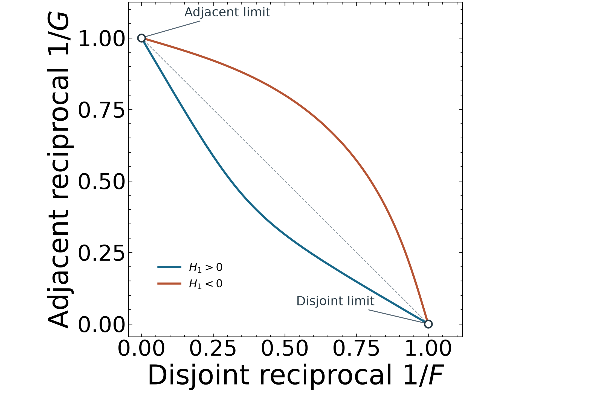
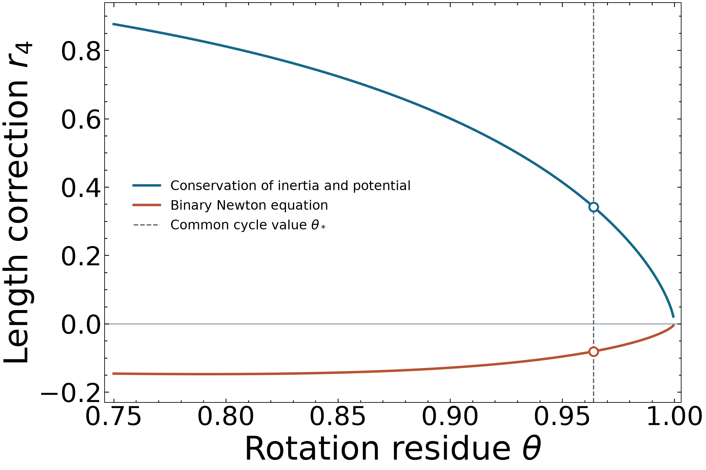
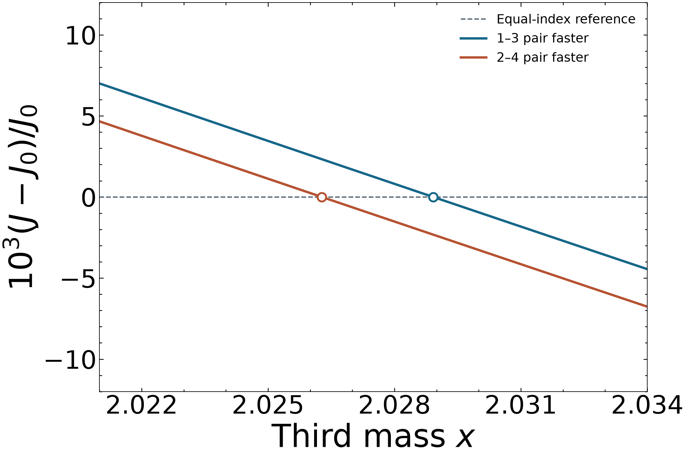
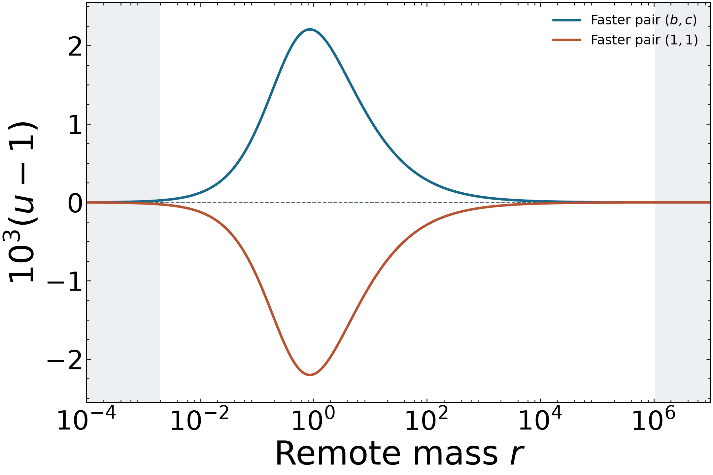

manuscript/main.texA deceptively simple question from 1970
Imagine four stars or planets drifting in a flat plane under Newton's inverse-square law of gravity.
You can measure their overall spatial spread by a single number—the polar moment of inertia about
their center of mass:
I(t) = Σ mi |qi(t)|2.
If the bodies lock into a rigid shape and spin uniformly like a pinwheel (a relative equilibrium),
every pairwise distance stays constant, so of course I(t) stays constant too.
In 1969—and in print in 1970—mathematician Donald G. Saari asked the converse: what if only the single aggregate number I(t) is held constant, while individual pairs are free to move closer and farther apart to compensate? Could four bodies perform a shape-shifting ballet that never changes its overall size?

56 years of attempts, breakthroughs, and near-misses
At first glance the conjecture looks like an exercise in classical mechanics. In practice, it became one of celestial mechanics' most stubborn traps—defeating multiple proof attempts over five decades:
2212.09718) is later withdrawn as incomplete.
Moving from three bodies to four doubles the number of mutual distances from three to six, turning
elimination into a vastly harder algebraic-geometry problem.
How the proof collapses dimension from 3 to 0
For every choice of four positive masses, every collision-free planar Newtonian solution with constant moment of inertia about its center of mass is a relative equilibrium. Moreover, there exists a uniform finite derivative order N* (14 ≤ N* ≤ 2188117) such that vanishing of the first N* inertia derivatives at a single collision-free instant forces rigid rotation.
If a nonrigid constant-inertia orbit existed, the Lagrange–Jacobi identity would lock both its kinetic energy T and Newtonian potential U to constants. Together with the planar Gram determinant and a homogenized order-59 velocity-fiber theorem, this traps the complex Zariski closure of the six squared mutual distances into an irreducible algebraic variety of dimension d ∈ {0, 1, 2, 3}. The proof eliminates each positive dimension by following the orbit to its complex boundary:
Forced Adjacent Collision
Every 3D component of a fixed signed-potential level connects via explicit smooth collar charts to a generic adjacent complex collision boundary, where rescaled Newton equations force an incompatible acceleration balance for every positive mass vector.
Hodge Index Forces Equal Masses
A closed canonical momentum form and connectedness of the ample (1,1) pairing divisor on ℙ2 × ℙ2 force all three double-pair mass equalities (m1 = m2 = m3 = m4). Equal-mass binary equations then eliminate the remaining boundary profiles.
All-Degree Poles & Mass Ties
At every point at infinity, two complementary distances stay finite. Equal-mass curves fail by a fourth-order sign contradiction at a coincident-center cycle; equal-frequency poles fail globally; and exact SymPy/Singular/Arb certificates close every remaining 2:1 mass-tie stratum.
Rigid Relative Equilibrium
With d = 3, 2, 1 ruled out, all six pairwise distances remain constant in time. Conservation of angular momentum then locks the four bodies into uniform rigid rotation.
Inside the proof: 52 core sections, 302 nodes of exploratory "dust"
Like many deep mathematical searches—human or AI-assisted—getting to the final theorem required
exploring a far larger forest than what survives in the clean proof spine. The interactive graph
below is extracted from manuscript/main.tex and the verification directory:
the glowing white-pink trunk is the 52-section main spine; violet filaments are supporting lemmas
and verifiers; dim gray dust shows the ~41% of exploratory derivations (rectangles, rhombi,
degree-by-degree climbs) that led to the breakthrough without being needed at the end.
Drag to pan · Scroll to zoom · Hover any node to inspect its line range and dependencies · Toggle Full 4-Body vs. Equal-Mass Sub-Spine.
Key figures from the exact verification
Each figure below is generated directly from exact polynomial, resultant, and Arb interval
certificates in verification/.

Signed-Potential Connector (d = 3)
Real slice of the smooth conic connecting disjoint boundary branches to excluded adjacent collision boundaries.

All-Degree Sign Contradiction (d = 1)
Opposite signs of the fourth-order bounded-length correction from conservation laws versus the binary Newton force.

Distinct-Mass Invariant Ties
Crossings of the conserved invariant J = UL2 across competing partitions, excluded by exact arithmetic.

Single-Repetition Mass Family
Required adjacent mass curves for the (a, a, b, c) stratum across the full positive mass range.
Does this matter for future astronomy and spaceflight?
Saari's conjecture began as pure celestial mechanics, yet its resolution—and especially the finite-order derivative machinery developed along the way—connects directly to three concrete frontiers in astronomy, orbital engineering, and mathematical physics:
1. Formation-Flying Spacecraft & Orbital Clusters
Multi-spacecraft missions like NASA's Magnetospheric Multiscale (MMS) four-satellite
tetrahedron—and emerging compact satellite swarms such as distributed orbital computing clusters
(e.g., Project Suncatcher)—must hold tight pairwise separations for science geometry
and optical cross-links. The theorem proves pure mutual gravity admits no "free" shape-shifting
constant-size dance; in Earth orbit, the manuscript's virial equation
I'' = 4T − 2U + 2Σ miρi·aiext
isolates the exact Earth gravity-gradient term that governs drift, and the high-order Taylor + ball-arithmetic
bounds can certify minimum separations over unpowered coast intervals.
2. Quadruple Stars & Co-Orbital Moons
Compact four-body gravitational systems—from hierarchical quadruple stars to co-orbital moon families (like Saturn, Tethys, Telesto, and Calypso)—cannot sustain a planar constant-inertia configuration unless they are locked into a rigid central configuration. Moreover, the proved open-neighborhood rigidity around all four equal-mass central configurations and the uniform angular momentum gap quantify how strongly non-rigid perturbations must distort the system's moment of inertia.
3. Short-Arc Rigidity & AI-Assisted Discovery
The new uniform finite derivative cutoff (14 ≤ N* ≤ 2188117) shows that rigidity isn't merely an infinite-time global property—it is already encoded in a bounded jet at a single instant. Equally, the open dependency graph and the replay scripts demonstrate a transparent template for human–AI mathematical research: every symbolic elimination and ball-arithmetic enclosure can be audited independently rather than taken on faith.
Audit and replay the proof yourself
The short equal-mass article and its supplement received a three-pass model review and an exact computational replay. Independent human mathematical review is pending. The full all-positive-mass manuscript is an unrefereed working draft. Equal-mass audit and replay commands (GitHub access required)
Independent human review is the gold standard in mathematics—especially for a long, AI-assisted
proof. Every computational certificate in this repository uses exact rational arithmetic,
characteristic-zero Singular standard bases, or rigorous Arb ball arithmetic (python-flint).
You can rebuild the manuscript and replay the five final mass-stratum exclusions locally:
# 1. Compile the full working manuscript latexmk -cd -pdf manuscript/main.tex # 2. Replay the five final mass-stratum exclusion certificates (SymPy + python-flint + Singular) cd verification python3 critical_equal_index_exclusion.py --singular Singular python3 fifth_equal_index_exclusion.py python3 near_equal_unequal_index.py python3 balanced_tie_exclusion.py python3 single_repeated_tie_exclusion.py # 3. Regenerate the proof dependency graph from the live repository cd .. python3 animations/extract_proof_graph.py
References
- D. G. Saari (1970). On bounded solutions of the n-body problem. In G. E. O. Giacaglia (ed.), Periodic Orbits, Stability and Resonances, D. Reidel, Dordrecht, pp. 76–81.
- D. G. Saari (2008). Reflections on the “Saari conjecture” and several new ones. Discrete and Continuous Dynamical Systems S, 1(4), 653–665. DOI: 10.3934/dcdss.2008.1.653
- R. Moeckel (2008). A proof of Saari's conjecture for the three body problem in ℝd. Discrete and Continuous Dynamical Systems S, 1(4), 631–646. DOI: 10.3934/dcdss.2008.1.631
- F. Diacu, E. Pérez-Chavela, and M. Santoprete (2005). Saari's conjecture for the collinear n-body problem. Transactions of the American Mathematical Society, 357(10), 4215–4223. DOI: 10.1090/S0002-9947-04-03606-2
- T. Schmah and C. Stoica (2007). Saari's conjecture is true for generic vector fields. Transactions of the American Mathematical Society, 359, 4429–4448.
- J. K. Lawson and C. Stoica (2007). Constant locked inertia tensor trajectories for simple mechanical systems with symmetry. Journal of Geometry and Physics, 57(4), 1247–1258. DOI: 10.1016/j.geomphys.2006.10.003
- G. Binyamini (2016). Multiplicity estimates: A Morse-theoretic approach. Duke Mathematical Journal, 165(1), 95–128. DOI: 10.1215/00127094-3165220
-
T. Williams, E. Palmer, N. Ottenstein, and V. Santhosh.
Magnetospheric Multiscale Mission formation flight dynamics results.
(Cited in
manuscript/main.tex, Section “Applications and outlook”.)